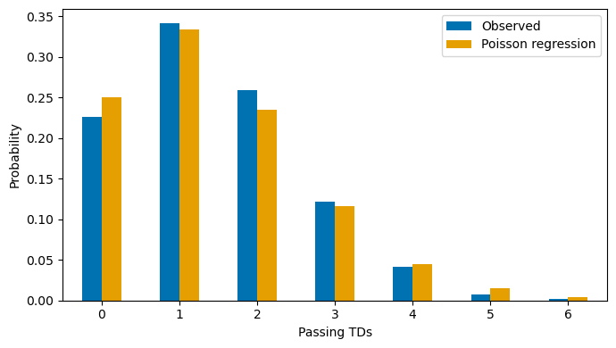
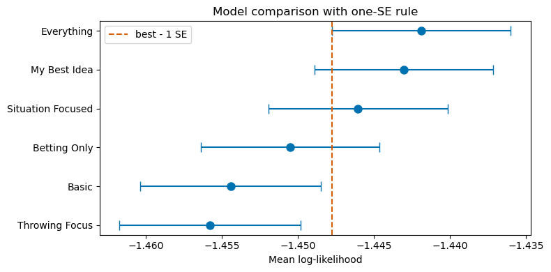
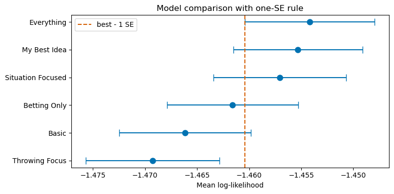
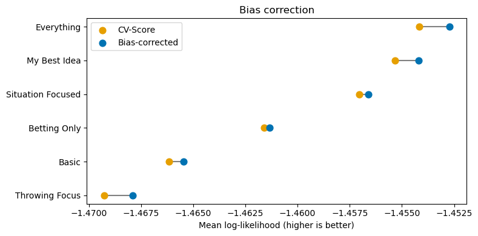

import pandas as pd
import numpy as np
import nflreadpy as nfl
import matplotlib.pyplot as plt
import seaborn as sns
from scipy.stats import poisson
from sklearn.linear_model import PoissonRegressor
from sklearn.model_selection import TimeSeriesSplit
import statsmodels.formula.api as smf
import statsmodels.api as sm
from sklearn.model_selection import KFold
from scipy.stats import poisson
from statsmodels.discrete.discrete_model import GeneralizedPoisson # Not gonna use it but its a little better
from sklearn.utils import resample
# I like to have the okabe ito colors, sort of
from okabeito import lightblue, yellow, orange, green, purple, red, blue, black
# This pulls data from the nfl read_py library
# We get data on every single play in games from 2006 to 2024
pbp = nfl.load_pbp(list(range(2006, 2024))).to_pandas()# So frist we are going to make sure we know the id of the quarterback
pbp_pass = pbp.query("passer_id.notnull()").reset_index(drop=True)
# This code will help us calculate game level outcomes
pbp_pass.loc[pbp_pass.pass_touchdown.isnull(), "pass_touchdown"] = 0
pbp_pass.loc[pbp_pass.passer.isnull(), "passer"] = "none"
pbp_pass["team_spread"] = np.where(
pbp_pass["posteam_type"] == "home",
pbp_pass["spread_line"],
-pbp_pass["spread_line"]
)
# We create a dataframe with the offensive stats of each quarterback, following Eager
qb_game = (
pbp_pass
.groupby(["season","week","passer_id","passer"])
.agg(pass_td=("pass_touchdown", "sum"),
n_passes=("pass_touchdown", "count"),
total_line=("total_line", "mean"),
spread_line=("team_spread","mean"),
air_yards=("air_yards","sum"),
interceptions=("interception","sum"),
completions=("complete_pass","sum"),
passing_yards=("passing_yards","sum"),
posteam_type=("posteam_type", "first"),
season_type=("season_type", "first"))
.reset_index()
.query("n_passes >= 10")
)
# Here is the description
print(qb_game.groupby("pass_td").size())pass_td
0.0 2410
1.0 3492
2.0 2571
3.0 1188
4.0 399
5.0 75
6.0 17
7.0 3
dtype: int64# Now we are going to create our feature matrix. The basic idea is for each passer and each game they appear in, we are going to compute
# their statistics on the games that occurred in that season before the game in the dataset. These will be the qb skill features used to
# estimate the passing TDs
rows = []
for season_idx in range(2006, 2024):
for week_idx in range(1, 23):
# NFL Games are played once a week, so we filter down the dataframe to contain games from the previous season
# and games from the earlier weeks. We will aggregate on those data for the feature matrix
mask = (
(qb_game["season"] == season_idx - 1) |
((qb_game["season"] == season_idx) &
(qb_game["week"] < week_idx))
)
# Now we compute the averages for each
filtered_qb_game = (
qb_game.loc[mask]
.groupby(["passer_id", "passer"])
.agg(n_games=("pass_td", "count"),
pass_td_rate=("pass_td", "mean"),
air_yards_pg=("air_yards", "mean"),
interceptions_pg=("interceptions", "mean"),
completions_pg=("completions", "mean"),
passing_yards_pg=("passing_yards", "mean"))
.reset_index()
.assign(season=season_idx, week=week_idx))
rows.append(filtered_qb_game)
# We put all these rows together
x_feat = pd.concat(rows, ignore_index=True)
# We merge with the overall original data frame to pull in some extra context. We also throw away older info
rolling_features_df = (
qb_game.query("season >= 2007")
.merge(x_feat, on=["season", "week", "passer_id", "passer"], how="inner")
.sort_values(["season", "week", "passer_id"])
.reset_index(drop=True)
)
# These are binary variables so just recoding them as numbers
rolling_features_df["is_home"] = (rolling_features_df["posteam_type"] == "home").astype(int)
rolling_features_df["is_playoff"] = (rolling_features_df["season_type"] == "POST").astype(int)
# Take a look at the data
rolling_features_df[["season","week","passer","pass_td","pass_td_rate","total_line","air_yards_pg","interceptions_pg",
"completions_pg","passing_yards_pg","n_games"]].head(10)| season | week | passer | pass_td | pass_td_rate | total_line | air_yards_pg | interceptions_pg | completions_pg | passing_yards_pg | n_games | |
|---|---|---|---|---|---|---|---|---|---|---|---|
| 0 | 2007 | 1 | J.Delhomme | 3.0 | 1.307692 | 43.0 | 263.384615 | 0.846154 | 20.230769 | 215.769231 | 13 |
| 1 | 2007 | 1 | B.Favre | 0.0 | 1.125000 | 41.5 | 331.562500 | 1.125000 | 21.437500 | 242.812500 | 16 |
| 2 | 2007 | 1 | J.Garcia | 0.0 | 1.500000 | 40.5 | 274.125000 | 0.250000 | 18.375000 | 209.125000 | 8 |
| 3 | 2007 | 1 | T.Green | 1.0 | 0.888889 | 34.0 | 199.555556 | 1.222222 | 15.000000 | 161.000000 | 9 |
| 4 | 2007 | 1 | M.Hasselbeck | 1.0 | 1.500000 | 40.5 | 320.357143 | 1.285714 | 17.571429 | 205.500000 | 14 |
| 5 | 2007 | 1 | D.Huard | 0.0 | 1.222222 | 37.5 | 213.333333 | 0.111111 | 16.222222 | 202.666667 | 9 |
| 6 | 2007 | 1 | J.Kitna | 3.0 | 1.312500 | 39.5 | 315.000000 | 1.375000 | 23.250000 | 263.000000 | 16 |
| 7 | 2007 | 1 | P.Manning | 3.0 | 1.700000 | 52.5 | 343.100000 | 0.800000 | 22.950000 | 271.550000 | 20 |
| 8 | 2007 | 1 | D.McNabb | 1.0 | 1.700000 | 41.5 | 279.200000 | 0.600000 | 18.000000 | 261.200000 | 10 |
| 9 | 2007 | 1 | S.McNair | 0.0 | 1.066667 | 39.5 | 240.800000 | 0.866667 | 20.733333 | 214.600000 | 15 |
x_feat| passer_id | passer | n_games | pass_td_rate | air_yards_pg | interceptions_pg | completions_pg | passing_yards_pg | season | week | |
|---|---|---|---|---|---|---|---|---|---|---|
| 0 | 00-0000865 | C.Batch | 1 | 3.000000 | 233.000000 | 0.000000 | 15.000000 | 209.000000 | 2006 | 2 |
| 1 | 00-0001361 | D.Bledsoe | 1 | 1.000000 | 304.000000 | 3.000000 | 16.000000 | 246.000000 | 2006 | 2 |
| 2 | 00-0001823 | A.Brooks | 1 | 0.000000 | 144.000000 | 0.000000 | 6.000000 | 68.000000 | 2006 | 2 |
| 3 | 00-0002110 | M.Brunell | 1 | 0.000000 | 174.000000 | 0.000000 | 17.000000 | 163.000000 | 2006 | 2 |
| 4 | 00-0003292 | K.Collins | 1 | 0.000000 | 291.000000 | 2.000000 | 17.000000 | 223.000000 | 2006 | 2 |
| ... | ... | ... | ... | ... | ... | ... | ... | ... | ... | ... |
| 28705 | 00-0038598 | J.Hall | 1 | 0.000000 | 113.000000 | 1.000000 | 5.000000 | 67.000000 | 2023 | 22 |
| 28706 | 00-0039150 | B.Young | 16 | 0.687500 | 250.562500 | 0.625000 | 19.687500 | 179.812500 | 2023 | 22 |
| 28707 | 00-0039152 | W.Levis | 8 | 1.000000 | 322.750000 | 0.500000 | 18.375000 | 224.000000 | 2023 | 22 |
| 28708 | 00-0039163 | C.Stroud | 17 | 1.529412 | 288.882353 | 0.294118 | 20.823529 | 268.058824 | 2023 | 22 |
| 28709 | 00-0039164 | A.Richardson | 4 | 0.750000 | 169.000000 | 0.250000 | 12.500000 | 144.250000 | 2023 | 22 |
28710 rows × 10 columns
# Get the target variable and extract the features we want to use
# We could in theory use pipelines but the data is clean and Poisson regression
# doesn't require preprocessing, and we don't have complex categorical features
# This is the very basic model from the Eager book
X_base = rolling_features_df[["pass_td_rate", "total_line"]].values
y = rolling_features_df["pass_td"].values
model_simple_full = PoissonRegressor(alpha=0, max_iter=1000)
model_simple_full.fit(X_base, y)
print(model_simple_full.coef_)[0.30939192 0.02309926]yarray([3., 0., 0., ..., 1., 2., 1.], shape=(9281,))td_counts = np.arange(7)
mu_hat = model_simple_full.predict(X_base)
model_probs = np.column_stack([poisson.pmf(k, mu_hat) for k in td_counts])
model_marginal = model_probs.mean(axis=0)
obs_p = pd.Series(y).value_counts(normalize=True).sort_index()
pd.DataFrame({
"Observed": [obs_p.get(k, 0) for k in td_counts],
"Poisson regression": model_marginal,
}, index=td_counts).plot.bar(color=[blue, orange], figsize=(7, 4))
plt.xlabel("Passing TDs")
plt.ylabel("Probability")
plt.xticks(rotation=0)
plt.legend()
plt.tight_layout()
plt.show()
# Here is very basic cross validation for this model
kf_random = KFold(n_splits=5, shuffle=True, random_state=65)
pw_all = []
for tr, te in kf_random.split(X_base):
model_basic = PoissonRegressor(alpha=0, max_iter=1000)
model_basic.fit(X_base[tr], y[tr])
mu_hat = model_basic.predict(X_base[te])
score = poisson.logpmf(y[te], mu_hat)
pw_all.append(score)
pw_all = np.concatenate(pw_all)
pw_all.mean()np.float64(-1.4544564601835692)rolling_features_df| season | week | passer_id | passer | pass_td | n_passes | total_line | spread_line | air_yards | interceptions | ... | season_type | defteam | n_games | pass_td_rate | air_yards_pg | interceptions_pg | completions_pg | passing_yards_pg | is_home | is_playoff | |
|---|---|---|---|---|---|---|---|---|---|---|---|---|---|---|---|---|---|---|---|---|---|
| 0 | 2000 | 1 | 00-0000722 | T.Banks | 1.0 | 33 | 37.0 | -2.5 | 0.0 | 0.0 | ... | REG | PIT | 11 | 1.545455 | 0.000000 | 0.727273 | 15.363636 | 194.181818 | 0 | 0 |
| 1 | 2000 | 1 | 00-0001218 | S.Beuerlein | 1.0 | 36 | 47.5 | 10.5 | 0.0 | 0.0 | ... | REG | WAS | 16 | 2.250000 | 0.000000 | 0.937500 | 21.437500 | 277.250000 | 0 | 0 |
| 2 | 2000 | 1 | 00-0001335 | J.Blake | 0.0 | 45 | 40.5 | 0.0 | 0.0 | 1.0 | ... | REG | DET | 13 | 1.153846 | 0.000000 | 0.923077 | 16.153846 | 201.384615 | 1 | 0 |
| 3 | 2000 | 1 | 00-0001361 | D.Bledsoe | 1.0 | 50 | 36.0 | -3.0 | 0.0 | 0.0 | ... | REG | TB | 16 | 1.187500 | 0.000000 | 1.312500 | 19.062500 | 249.062500 | 1 | 0 |
| 4 | 2000 | 1 | 00-0002110 | M.Brunell | 1.0 | 38 | 38.5 | -10.5 | 0.0 | 0.0 | ... | REG | CLE | 17 | 1.000000 | 0.000000 | 0.647059 | 16.647059 | 199.470588 | 0 | 0 |
| ... | ... | ... | ... | ... | ... | ... | ... | ... | ... | ... | ... | ... | ... | ... | ... | ... | ... | ... | ... | ... | ... |
| 13065 | 2023 | 21 | 00-0033873 | P.Mahomes | 1.0 | 50 | 44.0 | 4.5 | 233.0 | 0.0 | ... | POST | BAL | 38 | 2.052632 | 254.368421 | 0.684211 | 24.947368 | 279.289474 | 0 | 1 |
| 13066 | 2023 | 21 | 00-0034796 | L.Jackson | 1.0 | 47 | 44.0 | 4.5 | 344.0 | 1.0 | ... | POST | KC | 28 | 1.535714 | 240.857143 | 0.500000 | 18.678571 | 216.464286 | 1 | 1 |
| 13067 | 2023 | 21 | 00-0037834 | B.Purdy | 1.0 | 36 | 52.5 | 7.5 | 283.0 | 1.0 | ... | POST | DET | 26 | 1.846154 | 218.884615 | 0.576923 | 18.538462 | 248.153846 | 1 | 1 |
| 13068 | 2023 | 22 | 00-0033873 | P.Mahomes | 2.0 | 55 | 47.0 | -1.5 | 280.0 | 1.0 | ... | POST | SF | 39 | 2.025641 | 253.820513 | 0.666667 | 25.076923 | 278.307692 | 1 | 1 |
| 13069 | 2023 | 22 | 00-0037834 | B.Purdy | 1.0 | 43 | 47.0 | -1.5 | 324.0 | 0.0 | ... | POST | KC | 27 | 1.814815 | 221.259259 | 0.592593 | 18.592593 | 248.851852 | 0 | 1 |
13070 rows × 23 columns
feature_sets = {
"Basic": ["pass_td_rate","total_line"],
"Betting Only": ["total_line","spread_line"],
"Throwing Focus": ["pass_td_rate", "completions_pg","air_yards_pg","passing_yards_pg","interceptions_pg"],
"Situation Focused": ["total_line", "spread_line", "is_home","is_playoff","n_games","week"],
"Everything": ["pass_td_rate", "total_line", "completions_pg","air_yards_pg","passing_yards_pg","interceptions_pg","spread_line", "is_home","is_playoff","n_games","week"],
"My Best Idea": ["pass_td_rate","total_line","spread_line","is_home","air_yards_pg","completions_pg","passing_yards_pg"]
}
# Empty dict to store the results
cv_results = {}
kf_random = KFold(n_splits=10, shuffle=True, random_state=65)
for name, cols in feature_sets.items():
Xm = rolling_features_df[cols].values # So we pull out the features of the matrix we want
pw_all = [] # Reset out pointwise score
for tr, te in kf_random.split(Xm):
model = PoissonRegressor(alpha=0, max_iter=10000)
model.fit(Xm[tr], y[tr]) # Fit on the training fold
yhat = model.predict(Xm[te]) # Get test set predictions
ll = poisson.logpmf(y[te], yhat)
pw_all.append(ll) # Add our pointwise score
pw_all = np.concatenate(pw_all) # Turn the list into an array
cv_results[name] = dict(
mean_ll=pw_all.mean(), # Mean Score
se_ll=np.std(pw_all, ddof=1) / np.sqrt(len(pw_all)), # Standard error
)
cv_results_df = pd.DataFrame(cv_results).T
cv_results_df.index.name = "model"cv_results_df| mean_ll | se_ll | |
|---|---|---|
| model | ||
| Basic | -1.454445 | 0.005925 |
| Betting Only | -1.450535 | 0.005864 |
| Throwing Focus | -1.455796 | 0.005962 |
| Situation Focused | -1.446063 | 0.005897 |
| Everything | -1.441884 | 0.005885 |
| My Best Idea | -1.443056 | 0.005864 |
df_sorted = cv_results_df.sort_values("mean_ll", ascending=False)
fig, ax = plt.subplots(figsize=(8, 4))
y_pos = range(len(df_sorted))
ax.errorbar(df_sorted["mean_ll"], y_pos, xerr=df_sorted["se_ll"], fmt="o",
color=blue, capsize=5, markersize=8, linewidth=1.5)
threshold = df_sorted["mean_ll"].iloc[0] - df_sorted["se_ll"].iloc[0]
ax.axvline(threshold, color=red, ls="--", lw=1.5, label="best - 1 SE")
ax.set_yticks(y_pos)
ax.set_yticklabels(df_sorted.index)
ax.set_xlabel("Mean log-likelihood")
ax.set_title("Model comparison with one-SE rule")
ax.legend()
ax.invert_yaxis()
plt.tight_layout()
plt.show()
def plot_cv_comparison(cv_results):
df_sorted = cv_results_df.sort_values("mean_ll", ascending=False)
fig, ax = plt.subplots(figsize=(8, 4))
y_pos = range(len(df_sorted))
ax.errorbar(df_sorted["mean_ll"], y_pos, xerr=df_sorted["se_ll"], fmt="o",
color=blue, capsize=5, markersize=8, linewidth=1.5)
threshold = df_sorted["mean_ll"].iloc[0] - df_sorted["se_ll"].iloc[0]
ax.axvline(threshold, color=red, ls="--", lw=1.5, label="best - 1 SE")
ax.set_yticks(y_pos)
ax.set_yticklabels(df_sorted.index)
ax.set_xlabel("Mean log-likelihood")
ax.set_title("Model comparison with one-SE rule")
ax.legend()
ax.invert_yaxis()
plt.tight_layout()
plt.show()# Can do time series cross validation
tscv = TimeSeriesSplit(n_splits=5)
# Empty dict to store the results
cv_results = {}
for name, cols in feature_sets.items():
Xm = rolling_features_df[cols].values # So we pull out the features of the matrix we want
pw_all = [] # Reset out pointwise score
for tr, te in tscv.split(Xm):
model = PoissonRegressor(alpha=0, max_iter=10000)
model.fit(Xm[tr], y[tr]) # Fit on the training fold
yhat = model.predict(Xm[te]) # Get test set predictions
ll = poisson.logpmf(y[te], yhat)
pw_all.append(ll) # Add our pointwise score
pw_all = np.concatenate(pw_all) # Turn the list into an array
cv_results[name] = dict(
mean_ll=pw_all.mean(), # Mean Score
se_ll=np.std(pw_all, ddof=1) / np.sqrt(len(pw_all)), # Standard error
)
cv_results_df = pd.DataFrame(cv_results).T
cv_results_df.index.name = "model"plot_cv_comparison(cv_results)
tscv = TimeSeriesSplit(n_splits=5)
K = 5
cv_results = {}
for name, cols in feature_sets.items():
Xm = rolling_features_df[cols].values
# full-data fit for bias correction
full_mod = PoissonRegressor(alpha=0, max_iter=10000)
full_mod.fit(Xm, y)
# Mean TD predictions and log-likelihood for the full model
mu_full = full_mod.predict(Xm)
L_full = poisson.logpmf(y, mu_full)
pw_all = []
# We are going to use this to store the log likelihood of the models from each fold on the entire dataset
#
L_folds = np.zeros((len(y), K))
# Cross validation loop
for k, (tr, te) in enumerate(tscv.split(Xm)):
model_k = PoissonRegressor(alpha=0, max_iter=10000)
model_k.fit(Xm[tr], y[tr])
# CV scoring on the test fold
mu_te = model_k.predict(Xm[te])
pw_all.append(poisson.logpmf(y[te], mu_te))
# for the bias correction we calculate the likelihood on all the obs
mu_all = model_k.predict(Xm)
L_folds[:, k] = poisson.logpmf(y, mu_all)
pw_all = np.concatenate(pw_all)
# kappa is the correction term for the log-likelihood
# Basically the average performance improvement of the full model over each of the fold
# models
kappa = (L_full - L_folds.mean(axis=1)).mean()
cv_results[name] = dict(
mean_ll=pw_all.mean(),
se_ll=np.std(pw_all, ddof=1) / np.sqrt(len(pw_all)),
corrected_ll=pw_all.mean() + kappa
)
cv_results_df = pd.DataFrame(cv_results).T
cv_results_df.index.name = "model"df_sorted = cv_results_df.sort_values("corrected_ll", ascending=False)
fig, ax = plt.subplots(figsize=(8, 4))
y_pos = range(len(df_sorted))
for i in y_pos:
ax.plot([df_sorted["mean_ll"].iloc[i], df_sorted["corrected_ll"].iloc[i]],
[i, i], color="gray", linewidth=1.5, zorder=1)
ax.scatter(df_sorted["mean_ll"], y_pos, color=orange, s=60, zorder=2, label="CV-Score")
ax.scatter(df_sorted["corrected_ll"], y_pos, color=blue, s=60, zorder=2, label="Bias-corrected")
ax.set_yticks(y_pos)
ax.set_yticklabels(df_sorted.index)
ax.set_xlabel("Mean log-likelihood (higher is better)")
ax.set_title("Bias correction")
ax.legend()
ax.invert_yaxis()
plt.tight_layout()
plt.show()
num_boot = 2000
n = len(y)
boot_mus = np.zeros(num_boot)
feature_cols=feature_sets['Basic']
X_base = rolling_features_df[["pass_td_rate", "total_line"]].values
boot_coefs = np.zeros((B, 2))
X_target = np.array([[1.75,45.59]])
for b in range(num_boot):
# Two ways to resample, using np.random.choise, or sklearn resample
#idx = np.random.choice(n, n, replace=True)
model_boot = PoissonRegressor(alpha=0, max_iter=10000)
#model_boot.fit(X_base[idx], y[idx])
X_boot, y_boot = resample(X_base, y, n_samples=n, random_state=b)
model_boot.fit(X_boot, y_boot)
boot_mus[b] = model_boot.predict(X_target)[0]
boot_coefs[b,:] = model_boot.coef_
mu_low, mu_high = np.percentile(boot_mus, [4, 96.0])
print(f"92% interval lambda: [{mu_low:.3f}, {mu_high:.3f}]")
print(f"P(TD>=2) at lo: {1 - poisson.cdf(1, mu_low):.3f}")
print(f"P(TD>=2) at hi: {1 - poisson.cdf(1, mu_high):.3f}")
print(f"\n92% interval Coefficient ")
coef_names = ["pass_td_rate", "total_line"]
for j, name in enumerate(coef_names):
c_low, c_high = np.percentile(boot_coefs[:, j], [4, 96])
print(f" {name:<12} [{c_low:.4f}, {c_high:.4f}] mean={np.mean(boot_coefs[:, j]):.4f}")--------------------------------------------------------------------------- NameError Traceback (most recent call last) Cell In[267], line 1 ----> 1 mu_low, mu_high = np.percentile(boot_mus, [4, 96.0]) 4 print(f"92% interval lambda: [{mu_low:.3f}, {mu_high:.3f}]") 5 print(f"P(TD>=2) at lo: {1 - poisson.cdf(1, mu_low):.3f}") NameError: name 'boot_mus' is not defined